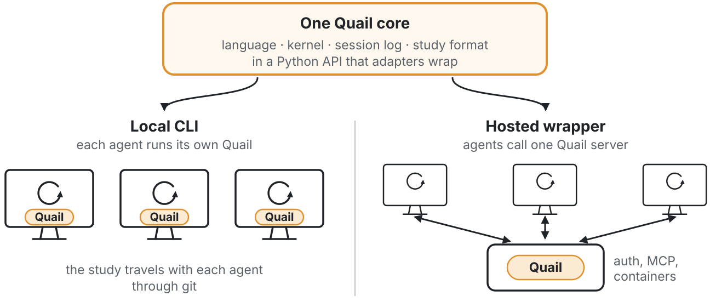
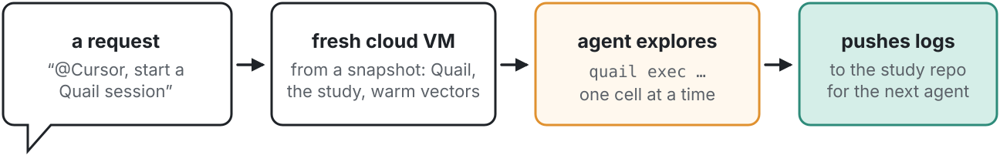

body = Field("body") kw = body.lexical("parking") > 0 sem = body.semantic("no place to park near the building") > 0.52 count(kw), count(sem), count(kw & sem)
(8, 8, 4)

A coding agent explores a corpus of text in a persistent Python kernel, with a small query language and annotations that outlast the kernel and travel through git.
 github.com/dcoyier/Quail
github.com/dcoyier/QuailRetrieval finds passages that look relevant. Coding agents iterate on code and results. Qualitative analysis needs both, across the whole corpus: counts, codes, and checks against samples.

tag(where, "topic", "parking").

One: run a Python cell, with a small language of fields, predicates, and four verbs. The agent composes.
A study: plain-text config, source CSVs, and session logs, shared through git.
Only tags, in its own session, all-or-nothing per cell. No network, file writes, or subprocesses.
What a notebook shows: output, last value, or traceback. Bounded, with a hint on errors.

Local: scales with the agents, debugs anywhere, and has no server to run.
Hosted: keeps sensitive data in one place, at the cost of operations and latency.
Quail began as a hosted MCP server; the rebuild made local the default.
Each shell command submits one cell. A background host keeps the kernel alive between commands, so variables persist as in a notebook.

Expressions are inert descriptions that live in Python variables, functions, and classes; verbs run them.
Field("body") | a column, per entry |
.lower() .search() .length() | transform values |
== < .isin() & | ~ | compose predicates |
.lexical(q) .semantic(q) | keyword and meaning scores |
count(where, by) | a number or cross-tab |
retrieve(where, rank) | entries to read |
values(expr, where) | a list for NumPy |
tag(target, field, value) | a durable annotation |
The source never changes. Tags commit per cell and outlive the kernel. Variables are working memory.

Quail never re-runs code for the agent; after a lost response, the log says what committed.
Real output on a 30-response survey written for this poster; each cell is one quail exec.
body = Field("body") kw = body.lexical("parking") > 0 sem = body.semantic("no place to park near the building") > 0.52 count(kw), count(sem), count(kw & sem)
(8, 8, 4)
for e in retrieve(kw & ~sem): print("keyword only", e.id, e["body"][:44]) for e in retrieve(sem & ~kw): print("meaning only", e.id, e["body"][:44])
keyword only r01 The parking permit went up again this year a keyword only r04 Our team keeps a parking lot of ideas on the keyword only r13 When a meeting runs long, the chair says to keyword only r14 The parking permit portal logged me out thre meaning only r02 I spend fifteen minutes every morning circli meaning only r05 The garage is full by 8:30 so I end up walki meaning only r10 There is nowhere to leave a car close to the meaning only r17 I would come in more often if I could reliab

tag(kw | sem, "topic", "parking") tag(Field("id").isin(["r04", "r13"]), "topic", None) count(where=Field("topic") == "parking", by=Field("dept"))
Counter({'admin': 4, 'it': 3, 'facilities': 2, 'research': 1})$ quail exec poster --reset count(by=Field("topic"))
Counter({None: 20,
'parking': 10})# after the reset
kwNameError: name 'kw' is not defined
Tags survived the reset; the variable did not.

Separate sessions write separate logs, so parallel agents merge cleanly.
Core implemented and tested. A first study runs on cloud agents:
